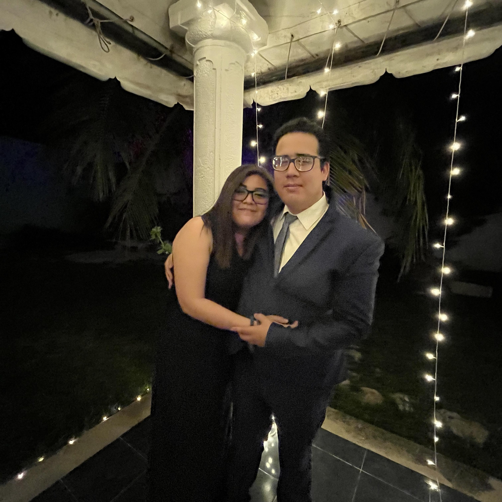

La vida de Za
Raíces en Mérida, Yucatán
El 16 de abril de 1994, en la cálida Mérida, Yucatán, nacía Zarahy Cabrera, una mujer con un corazón tan grande como el sol de su tierra natal. Desde temprana edad, Zarahy mostró un amor inquebrantable por los animales, especialmente por los perros. Esta pasión se convertiría en el motor de su vida y en la base de su más grande sueño.
Desde que abrió los ojos al mundo, Zarahy estuvo acompañada por Besha, una hermosa perrita de raza desconocida que llegó a su vida el mismo día de su nacimiento. Besha no solo fue una mascota, sino su amiga y confidente más cercana. Su relación fue una fuente constante de alegría y amor incondicional.
Zarahy compartió su amor por los animales con Misael, su novio, quien se convirtió en su compañero en la misión de ayudar a los peludos necesitados. Juntos, trabajaron incansablemente para hacer realidad el sueño del albergue y para darles un hogar y amor a aquellos que nunca lo habían conocido.
El sueño de Zarahy de tener un albergue para perros finalmente se hizo realidad. A través de un esfuerzo conjunto con su familia, amigos y la comunidad, creó un refugio donde todos los perros sin hogar eran bienvenidos, sin importar su raza o historia. En este albergue, los peludos encontraban amor, atención y una segunda oportunidad para ser amados y adoptados. Aunque su amor principal eran los perros, Zarahy no podía ignorar el sufrimiento de un gato necesitado que cruzó su camino. Este acto de compasión demostró su amor incondicional por todos los animales, independientemente de su especie.
La vida de Zarahy Cabrera es un testimonio de dedicación, compasión y amor hacia los animales. Su albergue se convirtió en un faro de esperanza y amor para los peludos desamparados de Mérida y más allá. Su historia es un recordatorio de que un corazón generoso y la determinación pueden hacer realidad los sueños y cambiar vidas. Zarahy sigue siendo un modelo a seguir para quienes buscan hacer del mundo un lugar más amable y compasivo para todos los seres vivos.
A lo largo de su viaje para mantener el albergue en funcionamiento, Zarahy se enfrentó a desafíos financieros y emocionales. Sin embargo, su determinación y pasión la mantuvieron enfocada en su misión. Organizó eventos de recaudación de fondos, colaboró con otras organizaciones benéficas y trabajó incansablemente para asegurarse de que cada perro y gato bajo su cuidado recibiera la atención y el amor que merecían.
Con el tiempo, el albergue de Zarahy se convirtió en un modelo de cuidado y compasión para animales necesitados. Su legado perdura en cada perro y gato que ha sido rescatado y en cada corazón que ha sido tocado por su amor. A medida que los años pasan, Zarahy sigue siendo un faro de esperanza y un recordatorio de que el amor y la dedicación pueden cambiar vidas, tanto humanas como de sus amigos peludos. La historia de Zarahy Cabrera es un testimonio inspirador de cómo una pasión profunda y un deseo de hacer el bien pueden llevar a la realización de sueños y al impacto positivo en la comunidad. Su amor por los perros y su compromiso con su bienestar continúan siendo una fuente de inspiración para todos los que tienen el privilegio de conocerla. Su legado es un faro de compasión y amor que ilumina el camino para aquellos que desean marcar la diferencia en el mundo de los animales necesitados.